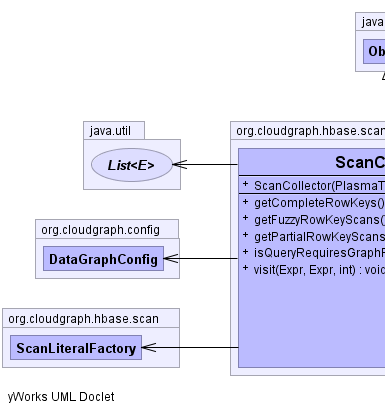
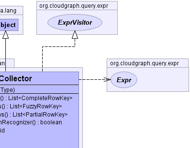
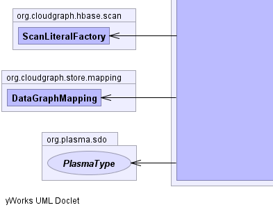
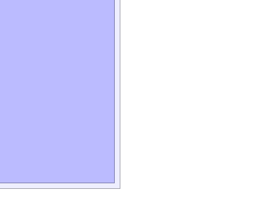

public class ScanCollector extends java.lang.Object implements ExprVisitor
partial, fuzzy and other scan
constructs within the context of a binary (query) expression
syntax tree, encapsulating operator precedence and other factors.
Composite row key scans represent only
logical binary 'AND'
expressions across the key fields. So for
relational binary
expressions linked within a query syntax tree by one or more logical binary
'AND', expressions, a single partial or
fuzzy row key scan may be used. But for
relational binary
expressions linked by logical binary 'OR' expressions multiple scans must be used. Clients of this
collector class may execute the resulting scans in series or in parallel
depending on various performance and other considerations.
org.cloudgraph.hbase.expr.Expr,
org.cloudgraph.hbase.expr.BinaryExpr,
org.cloudgraph.hbase.expr.ExprVisitor,
DataGraphMapping,
org.cloudgraph.hbase.expr.LogicalBinaryExpr,
org.cloudgraph.hbase.expr.RelationalBinaryExpr,
org.cloudgraph.hbase.expr.WildcardBinaryExpr|  |  |
|  |  |
| Constructor and Description |
|---|
ScanCollector(org.plasma.sdo.PlasmaType rootType) |
| Modifier and Type | Method and Description |
|---|---|
java.util.List<CompleteRowKey> |
getCompleteRowKeys() |
java.util.List<FuzzyRowKey> |
getFuzzyRowKeyScans() |
java.util.List<PartialRowKey> |
getPartialRowKeyScans() |
boolean |
isQueryRequiresGraphRecognizer() |
void |
visit(Expr target,
Expr source,
int level)
The client event received when a new node is encountered.
|
public boolean isQueryRequiresGraphRecognizer()
public java.util.List<PartialRowKey> getPartialRowKeyScans()
public java.util.List<FuzzyRowKey> getFuzzyRowKeyScans()
public java.util.List<CompleteRowKey> getCompleteRowKeys()
public void visit(Expr target, Expr source, int level)
ExprVisitorvisit in interface ExprVisitortarget - the target nodesource - the target nodelevel - the traversal levelExprCloudGraph® is a registered trademark of TerraMeta Software, Inc. Copyright © 2014 - All Rights Reserved.